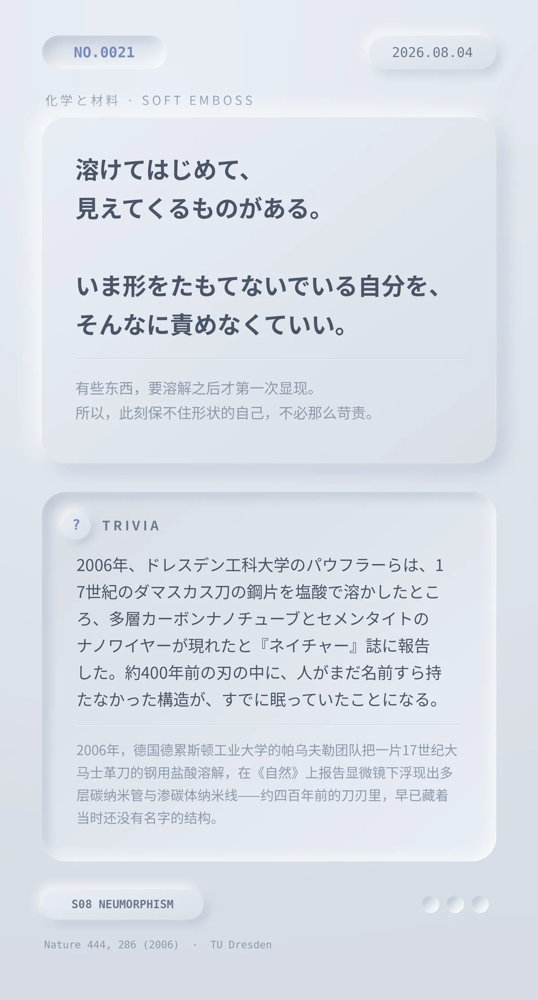

溶けてはじめて、見えてくるものがある。いま形をたもてないでいる自分を、そんなに責めなくていい。（有些东西，要溶解之后才第一次显现。所以，此刻保不住形状的自己，不必那么苛责。）
2006年、ドレスデン工科大学のパウフラーらは、17世紀のダマスカス刀の鋼片を塩酸で溶かしたところ、多層カーボンナノチューブとセメンタイトのナノワイヤーが現れたと『ネイチャー』誌に報告した。約400年前の刃の中に、人がまだ名前すら持たなかった構造が、すでに眠っていたことになる。（2006年，德国德累斯顿工业大学的帕乌夫勒团队把一片17世纪大马士革刀的钢用盐酸溶解，在《自然》上报告显微镜下浮现出多层碳纳米管与渗碳体纳米线——约四百年前的刀刃里，早已藏着当时还没有名字的结构。）